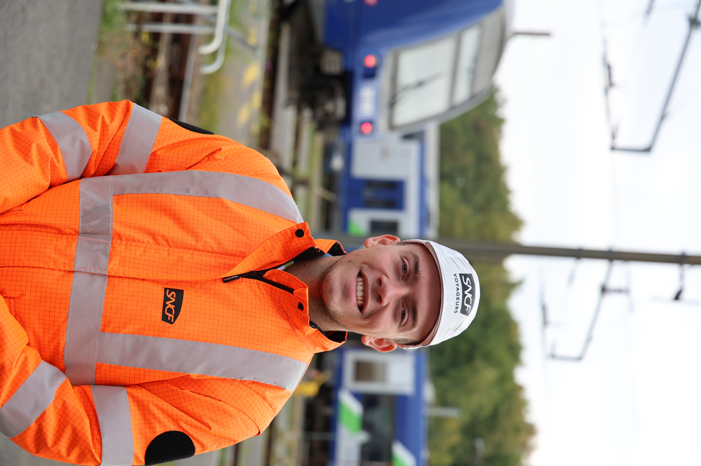

HugoBRUNEVAL
Étudiant en BUT Hygiène, Sécurité, Environnement en alternance — passionné par la prévention des risques, la démarche qualité et la protection de l'environnement. Sapeur-pompier volontaire, je conjugue engagement terrain et rigueur académique au service de la sécurité.

Sapeur-Pompier Volontaire
En parallèle de mes études, je m'engage comme sapeur-pompier volontaire au sein d'un centre de secours. Cette expérience forge des compétences directement transposables au domaine QSE : gestion des risques en temps réel, travail en équipe sous pression, et culture de la sécurité au quotidien.
Première année de BUT HSE
Première immersion dans le domaine de l'Hygiène, Sécurité et Environnement. Cette année fondatrice m'a permis d'acquérir les bases théoriques et pratiques de la prévention des risques professionnels, de la réglementation HSE et des démarches qualité.
Deuxième année BUT HSE — Alternance
Deuxième année réalisée en alternance, combinant approfondissement académique QSE et immersion professionnelle en entreprise. Ce rythme école/entreprise m'a permis d'appliquer directement les connaissances acquises et de développer une vraie posture de technicien HSE.
Troisième année BUT HSE — Alternance
Dernière année de BUT HSE réalisée en alternance. Cette page sera complétée progressivement avec les missions en entreprise, les projets académiques et les compétences développées au cours de cette année de finalisation.
Contenu en cours de construction
Cette section sera enrichie au fil de la 3e année : missions terrain, projets de fin d'études, compétences acquises et réalisations notables.
Mes expériences & stages
Mes expériences professionnelles, stages et missions en lien avec le domaine QSE. Chaque expérience a contribué à forger ma vision de la sécurité au travail et à développer des compétences concrètes et immédiatement opérationnelles.
| Période | Poste / Rôle | Structure | Apport QSE |
|---|---|---|---|
| En cours | Sapeur-pompier volontaire | Centre de secours [Ville] | Culture sécurité, gestion de crise, secourisme |
| À compléter | Autre expérience | Structure | Compétences développées |